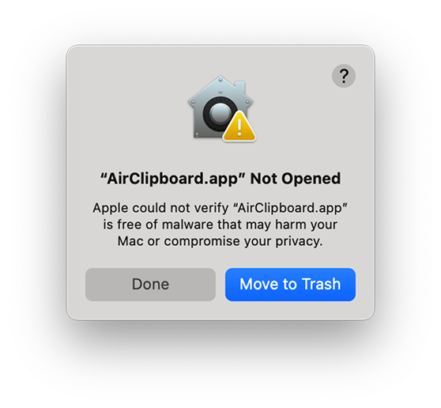
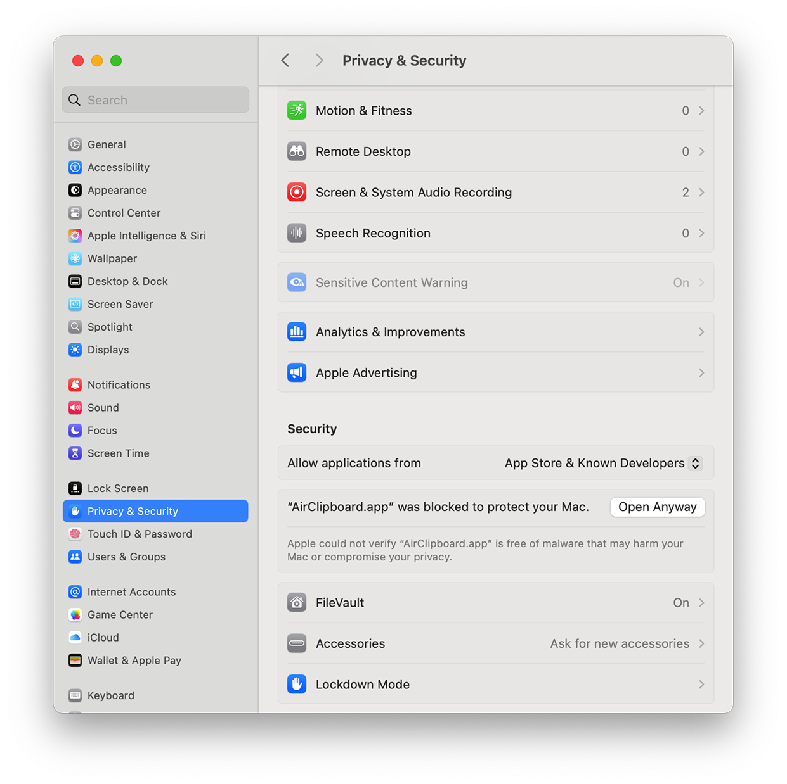
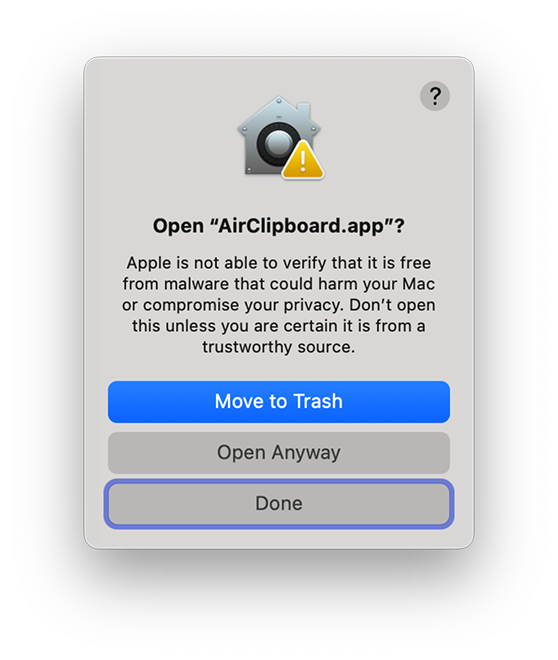

Need help getting started?
Install, allow permissions, and master the basics of Shelfinder.
🔽 How to Install
After downloading the app, double-click the .zip file to extract Shelfinder.app.
Then, drag Shelfinder.app to your Applications folder.
If macOS shows a security prompt, right-click the app and select “Open” to confirm execution.
If you see a security warning, follow the steps below to open Shelfinder.
🛡️ macOS Security Warning: How to Open Shelfinder
Because Shelfinder is distributed independently, you may see a warning when opening the app for the first time. Here’s how to proceed:
-
After moving Shelfinder to your Applications folder, double-click to open it.
If you see "Shelfinder.app” Not Opened", click Done. -
Open System Settings > Privacy & Security.
Scroll down and you'll see an option: "Shelfinder.app was blocked to protect your Mac". Click Open Anyway. -
Try to open Shelfinder again.
You’ll see another dialog. Click Open Anyway to confirm. Shelfinder will now launch normally.
⌨️ Global Shortcut
Pick your own global shortcut — combine keys like Command (⌘), Option (⌥), Control (⌃), Shift (⇧), and any letter or number.
You can change it anytime in Preferences.
📦 Free vs Pro
The free version gives you access to the last 3 copied items. Upgrade to Pro to unlock extended history, full content types, and advanced features.
💡 Common Questions
Q: The app doesn’t open after I install it.
A: Right-click the app, choose “Open” once to bypass macOS security.
Q: The global shortcut doesn't respond.
A: Check if Shelfinder has Accessibility permissions enabled in your system settings.
Q: My clipboard history is not updating.
A: Ensure Input Monitoring is granted, then restart the app.